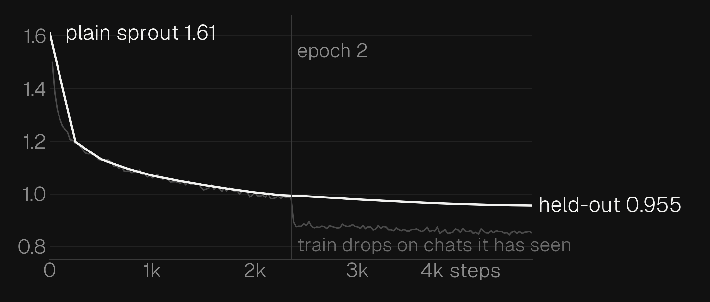
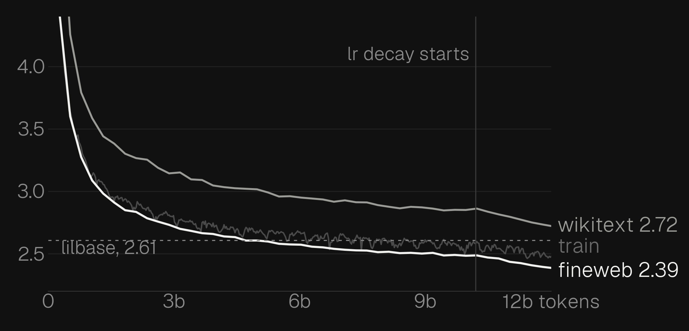
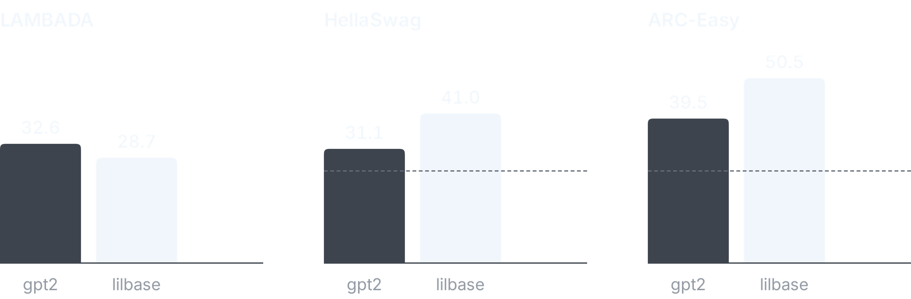
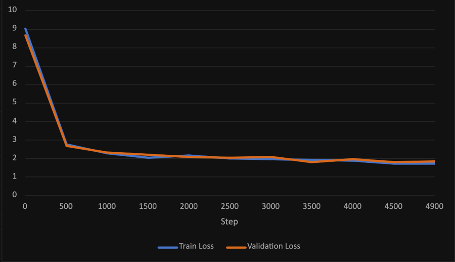
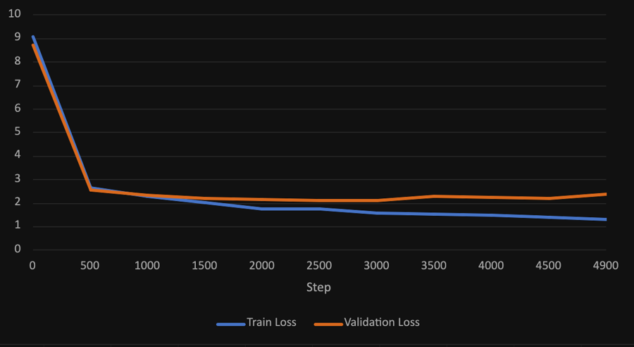

nav
perth, australia
i build language models from scratch and research how they learn. most of them trained on my macbook air or a free tpu, and theyre small, so they a lot.
perth, australia
i build language models from scratch and research how they learn. most of them trained on my macbook air or a free tpu, and theyre small, so they a lot.
theres a timeline of every model too, back to the one that only knew one sentence.
theres an rss feed too, if you still use those.
everything downloads once and runs on your own computer. nothing you type leaves it.
tokens read
0 billion
lilbase read 6.1b
fineweb-edu, dclm, cosmopedia, gutenberg
(its canberra)
zero shot, vs gpt-2 small
wins two, loses lambada
train vs val loss
at 1% it memorised its stories
downloads once, then its yours
every repo i found needed an nvidia gpu
merged
mx.jvp(logcumsumexp)
it crashed, so i worked out the derivative in log space and wrote the tests. merged into main on oct 4.
every repo i found for training your own llm needed an nvidia gpu, so i made one that runs on my macbook air.
i found an open issue in apples mlx, fixed it, and on oct 4 it got merged into main.


sprout finished pretraining on sep 27. 523m params, 12 billion tokens, all on the free kaggle tpu.
a base model just continues text. if you ask it a question itll probably write 5 more questions instead of answering.

everything before this was trained on my laptop, but i wanted to make a proper base model, like one thats actually read a decent chunk of the internet.
my little brother kept asking me for bedtime stories so i made a model that tells them.


i wanted to see how much the amount of data actually matters if you keep everything else the same.
ok this one is an actual language model. 8.2m params, llama style, trained from scratch on tinystories.
made this the day after liltransformer. instead of one sentence it reads a whole text file.
first ml thing i ever made lol. you give it a sentence, pick a word from it, and it tries to guess the next word.
345mb
the newest one. 523m params, pretrained on 12 billion tokens, then taught to chat.
274mb
lilbase finetuned to chat. it will tell you the capital of australia is melbourne.
52mb
bedtime stories. start it with once upon a time and it keeps going.
Once upon a time, there was
type anything and see it split into the pieces lilstory actually reads.
a tiny net written in plain python, no libraries, guessing what you draw.